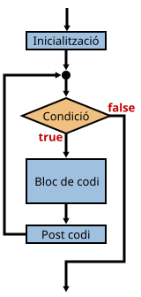

Aquesta estructura és similar al while. De fet, qualsevol bucle for es pot substituir per un bucle while.
Lavors, en quins casos s'ha d'utilitzar for i en quins casos while?
La sintaxi general és:
for (inicialitzacio; condicio_repeticio; post_codi) {
// Codi que s'executarà repetidament
}
Dins del for s'han de posar 3 expresions separades per ;:
Encara que aquestes expressions poden ser més complexes o fins i tot estar buides, tenint en compte la utilitat dels bucles for (repetir un codi N vegades) i per facilitar la comprensió del programa, cal limitar-se als casos anteriors.
La sintaxi equivalent d'un bucle for fet amb while seria:
inicialitzacio;
while (condicio_repeticio) {
// Codi que s'executarà repetidament
post_codi;
}
// Escriu Hello world! 10 vegades
for (let i = 0; i < 10; i++) {
alert("Hello world!");
}
// Calcular els valors de la funció y = 3x + 8 entre -10 i +10
let y;
for (let x = -10; x <= 10; x += 2.5) {
y = 3 * x + 8;
alert("y(" + x + ") = " + y);
}
És habitual posar noms com i, j o k a la variable que controla el bucle excepte quan aquesta s'utilitza en el codi de dins del bucle per a un propòsit específic.
Més endavant es veurà com utilitzar bucles for per realitzar iteracions amb elements d'una llista.
ATENCIÓ: Un error difícil de detectar és la utilització de la variable de control dins del bucle per fer càlculs:
for (let x = -10; x <= 10; x += 2) {
x = 3 * x + 8;
}
En aquest cas, el bucle no acabarà mai!
En altres casos, podria ser que acabés abans d'hora o que donés resultats incorrectes.
També es poden posar bucles dins d'altres bucles, però cal utilitzar una variable de control diferent.
Per cada vegada que s'executi el bucle exterior, el bucle interior s'executarà N vegades.
for (let i = 0; i < 10; i++) {
for (let j = 0; j < 10; j++) {
alert(i + "," + j + " ");
}
}